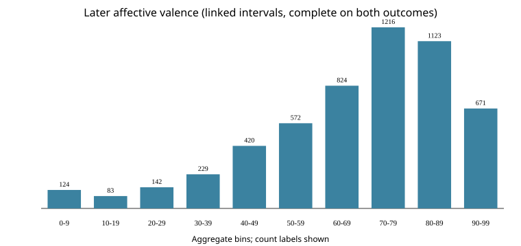
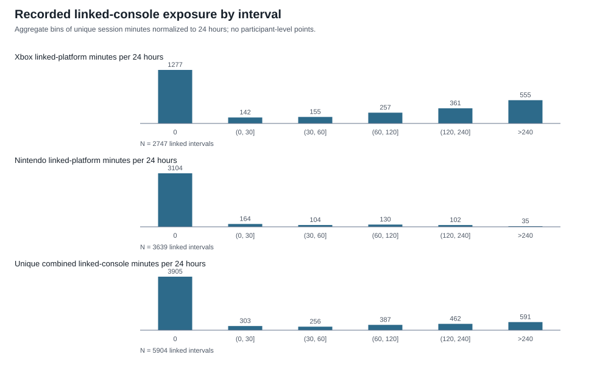

Aggregate study / Open Play dataset
Does a day with more recorded console play than usual line up with a different mood at the next survey?
The result is precise enough to rule out associations larger than the pre-set meaningful band in this cohort. It is an association study—not a causal test—and covers recorded linked-console play only.
0.07points / hour
Primary estimate
95% interval
-0.14 to 0.29
All values are on the affective-valence 0-100 scale. The plotted interval is the wider 95% interval.
How to read this chart
One line. Three things to notice.
Estimate
The dot is the model's central estimate.
95% interval
The line shows the range compatible with the model and data.
Meaningful band
The shaded band marks the pre-set threshold used for interpretation.
Main result
The primary estimate stays inside the pre-set band.
Affective valence · 0-100 scale
points per hour above usual
points per hour above usual
Estimate 95% interval +/-0.5 pre-set meaningful band
The horizontal scale includes zero. The estimate and interval are shown in the original source precision.
Does it hold up?
The per-hour alternatives cluster near the primary result.
Rows marked included count toward the robustness label. Analyses with different units are separated so their axes are not combined.
Same unit
Per hour
Different unit
Log exposure · per 1 SD
Different unit
Any play vs none
Leave-one-out summary · aggregate only
Removing each participant in turn leaves the conclusion unchanged.
0.020.12
Secondary outcome
Life satisfaction is shown separately.
Separate measure · not combined with mood
points per hour
points per hour
Estimate 95% interval +/-0.5 pre-set meaningful band
Who is in the analysis
From valid intervals to the primary cohort.
Counts are aggregate. A missing participant count is left unfilled rather than inferred.
Gap-cutoff checks
How the interval rule changes the cohort
Recorded exposure
Zero is a category, not missingness.
66.1415989159891%zero recorded sessions
0median linked-console minutes per interval
A zero means no intersecting cleaned session under the existing coverage assumption; it does not establish that no play occurred. No linked account or unusable exposure is not treated as zero.


How far to trust this
Read the boundary conditions before reading the headline.
Full methods & limitations
What the aggregate bundle can and cannot say
Research question and data
The primary question is whether an interval with more recorded linked-console play than a participant's own usual amount is associated with affective valence at the later daily survey, after accounting for prior valence, participant-average recorded play, and interval duration. A separate secondary analysis considers life satisfaction, based on the distinct statement "I was satisfied with my life today." The two measures are analyzed separately; neither is treated as a general well-being score. Both are survey responses, not continuous observations of mood during play.
This bundle draws on existing aggregate outputs from the cleaned daily-survey and Xbox/Nintendo interval dataset, the primary analysis, power simulation, prespecified sensitivity analyses, secondary life-satisfaction analysis, and design diagnostics. Apart from the descriptive counts and interval-length median recorded in Addendum 6, which were computed from the interval dataset, no participant-level data or saved model object was read when assembling this bundle. Console exposure is the unique recorded Xbox and/or Nintendo session time overlapping the survey interval. The interval builder had already combined overlapping platform sessions as a time union, so simultaneous minutes are counted once. This measure describes linked accounts on those consoles, not all digital play. Nintendo capture is limited to first-party titles; Steam and mobile are outside the measure. An absent exposure value reflects unavailable linkage or unusable data and is not set to zero. A zero is no intersecting cleaned session under the existing coverage assumption; it does not establish that no play occurred.
Interval structure and comparisons
An analysis row represents one participant between two consecutive daily-survey completions. The earlier completion anchors prior outcome and interval start; the later completion anchors the outcome and interval end. The primary cohort requires linked Xbox and/or Nintendo coverage, an interval no longer than 48 hours, observed affective valence at both endpoints, and nonmissing exposure. The life-satisfaction analysis applies its own endpoint completeness rule and remains secondary.
The within-person exposure term represents the difference between an interval's exposure and that participant's mean exposure in the analysis cohort. The between-person term represents the participant's mean exposure relative to the cohort mean. They answer different questions: a person's interval may be above their own usual even if their usual is low compared with other participants. The between-person coefficient is conditional on prior_between, which closely tracks each participant's average outcome; it should not be read as a simple unadjusted comparison of people with different typical play.
Prespecification and interpretation
Analysis Plan v1 was hashed before the primary analysis. Dated addenda recorded clarifications and decision rules before the corresponding later steps. The primary model used the prespecified participant random-intercept specification, REML, model-based Satterthwaite inference, and participant-clustered CR2 inference. The interpretation interval is the wider of the two 95% intervals. The prespecified smallest effect size of interest is plus or minus 0.5 affective-valence points per hour of above-usual recorded play. Addendum 2 records that this threshold was chosen after viewing the blinded power simulation and before any real exposure-outcome estimate existed; it is a judgment-based threshold, not a clinical or established standard. The sensitivity robustness label requires the same interpretation category across the alternatives designated in Addendum 2. These choices define reporting rules; they do not make the data experimental.
The primary model was fitted twice: once for the reported results and once as an identical refit, permitted in advance by an addendum, solely to extract diagnostics (the estimates matched). In the sensitivity analyses, four initial runs of one analysis used an interval limit not in the plan and were discarded and rerun. The fit ledger lists every model fit run on study data.
Power calculation and limitations
The power calculation used the actual cohort structure and exposure/covariate values with simulated later outcomes calibrated from an outcome-only model. Its assumptions include independent normal residuals, so its detectable-size figure is conditional on that simulation setup. It is not a guarantee about uncertainty under every possible data-generating process.
The measure covers recorded linked-console activity only. Telemetry completeness is assumed under existing processing rules, and interval-specific missed capture cannot be distinguished from true no-play in the aggregate interval outputs. Nintendo telemetry covers first-party titles only; Steam and mobile are excluded. Sixty-seven daily-survey participants lacked an exact intake match and were not linked by inference. Observed zero outcome scores occur even though the instrument description states a lower bound of one; the origin of those values remains unknown. They were not recoded in this bundle.
Only participants with linked Xbox and/or Nintendo accounts are analyzed (371 of 419 linked participants in the primary cohort), so results may not apply to people who play on other platforms, play with accounts that are not linked, or who completed too few surveys. For the log-exposure sensitivity analysis the threshold conversion is approximate.
The existing pipeline treats the relevant timestamps as UTC instants for interval alignment, but the original export clock configuration was not independently established. This timestamp assumption is retained and should be remembered when interpreting elapsed intervals. Multiple fitted analyses were singular, with participant intercept variance estimated at the boundary. Mood scores also bunch near the top of the response scale, limiting room for higher values. These features can affect model interpretation even where cluster-robust intervals are reported.
The design is observational. Survey valence is reported at completion, while recorded play accumulates across the interval ending at that completion; the data do not locate the mood response relative to each session within that interval. Life satisfaction asks about the day and its time window overlaps the gaming interval. The results therefore describe associations in the recorded cohort and do not establish direction or mechanism. The secondary life-satisfaction analysis was not stress-tested to the same extent as the primary analysis.
Transparency
Every fit run has a place in the ledger.
Frozen plan, plain language
Decisions were set before the real exposure-outcome estimate.
The analysis plan defined the within-person comparison, the primary cohort gates, the separate secondary outcome, the sensitivity families, and the interpretation band. Addenda record later clarifications instead of silently changing the original plan.
Download Analysis Plan v1 ↗Download the bundle
Aggregate files only
No participant-level data, uploads, accounts, tracking, backend, or visitor-data collection.